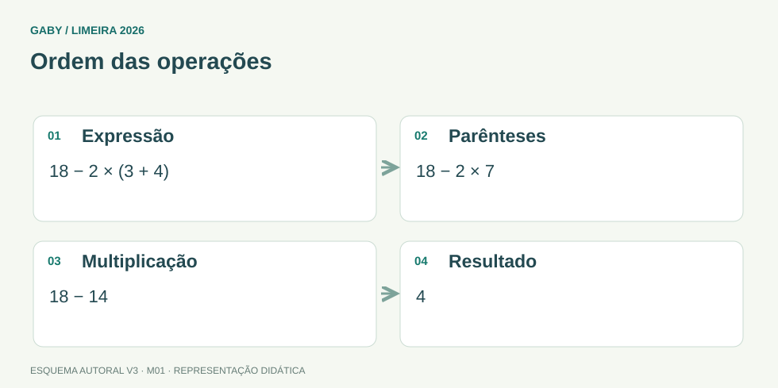

Objetivos do módulo
- Efetuar operações com inteiros, frações e decimais.
- Aplicar corretamente a ordem das operações.
- Resolver expressões e situações-problema com números reais.
- Classificar números reais e converter dízimas periódicas em fração.
- Aplicar propriedades de potências e radicais, inclusive notação científica e racionalização.
- Usar módulo, desigualdades, produtos notáveis e simplificações corretas em expressões.
- Reconhecer valor posicional, paridade e números primos e compostos.
Ordem das operações

Descrição em texto do esquema
- Expressão: 18 − 2 × (3 + 4)
- Parênteses: 18 − 2 × 7
- Multiplicação: 18 − 14
- Resultado: 4
Oficina visual · aplique o esquema
Calcule 24 ÷ 6 × 2 + 3 e mostre a ordem utilizada.
Atividade autoral complementar da V3. Registre sua resposta; a resolução está no arquivo de gabarito e revisão.
Mapa do conteúdo
1. Conjuntos numéricos na prática
Nos concursos de nível médio, “números reais” reúne naturais, inteiros, racionais e irracionais. O foco é operacional: sinais, frações, decimais, potências e raízes.
Ao transformar um decimal finito em fração, use potência de 10: 0,25 = 25/100 = 1/4.
2. Regras de sinais
| Operação | Regra |
|---|---|
| Adição de sinais iguais | somar módulos e manter o sinal |
| Adição de sinais diferentes | subtrair módulos e usar o sinal do maior módulo |
| Multiplicação/divisão | sinais iguais → positivo; diferentes → negativo |
3. Frações
Para somar ou subtrair frações, iguale denominadores; para multiplicar, multiplique numeradores e denominadores; para dividir, multiplique pela inversa da segunda fração. Simplifique sempre que possível.
4. Ordem das operações
A sequência segura é: parênteses/agrupamentos; potências e raízes; multiplicações e divisões; adições e subtrações. Operações do mesmo nível são resolvidas da esquerda para a direita.
5. Estimativa e conferência
Antes de encerrar, estime o resultado. Se 49,8 × 2,1 ficou 1.045, algo está errado: 50 × 2 ≈ 100. A estimativa é um detector rápido de erros de vírgula e sinal.
Aprofundamento 1 — Conjuntos numéricos: racionais, irracionais e reais
Os conjuntos numéricos se encaixam um dentro do outro: N ⊂ Z ⊂ Q ⊂ R. Todo natural é inteiro, todo inteiro é racional (5 = 5/1) e todo racional é real. Os irracionais também são reais, mas ficam fora de Q. O conjunto dos reais é a reunião dos racionais com os irracionais.
| Conjunto | O que contém | Exemplos |
|---|---|---|
| Naturais (N) | 0, 1, 2, 3, … (nesta aula o 0 é natural; alguns livros começam em 1) | 0; 7; 120 |
| Inteiros (Z) | os naturais e seus opostos negativos | −15; 0; 42 |
| Racionais (Q) | números que podem ser escritos como p/q, com p e q inteiros e q ≠ 0 | −3/4; 0,6 = 3/5; 0,121212… = 4/33 |
| Irracionais | reais que não podem ser escritos como p/q | √3; π; 0,505005000500005… |
| Reais (R) | racionais e irracionais juntos; cada ponto da reta numérica é um real | todos os anteriores |
Como reconhecer pela forma decimal
- Decimal finito, como 0,375: racional.
- Dízima periódica (infinita, com um bloco que se repete), como 0,4111…: racional.
- Decimal infinito e não periódico, como √3 = 1,7320508…: irracional.
Ser infinito não basta para ser irracional: 0,333… é infinito, mas vale 1/3. O irracional é infinito e não periódico.
Raízes de naturais: se o natural é potência perfeita, a raiz é inteira (√49 = 7; ∛64 = 4). Se não é, a raiz é irracional (√10; ∛20).
Operações com irracionais
- Racional + irracional é sempre irracional. Motivo: se r é racional, s é irracional e r + s fosse racional, então s = (r + s) − r seria diferença de dois racionais, portanto racional. Isso contradiz a hipótese. Exemplo: 2 + √5 é irracional.
- Racional não nulo multiplicado por irracional é irracional, pelo mesmo raciocínio (se q × s = t fosse racional, s = t ÷ q também seria). Exemplo: 3√2. Com o zero é diferente: 0 × √2 = 0.
- A soma ou o produto de dois irracionais pode ser racional ou irracional. √3 × √12 = √36 = 6 (racional); √2 × √3 = √6 (irracional); (1 + √5) + (1 − √5) = 2 (racional).
Entre dois racionais sempre há outro
Essa propriedade se chama densidade. Entre dois racionais distintos a < b sempre existe outro racional. Uma escolha garantida é a média aritmética (a + b)/2: ela é racional e fica exatamente no meio, a < (a + b)/2 < b. Repetindo o processo, aparecem infinitos racionais entre a e b.
Exemplo: entre 3/7 e 4/7, a média é (3/7 + 4/7) ÷ 2 = 1/2. Outra forma: reescreva em catorze avos, 6/14 e 8/14; o 7/14 = 1/2 está entre eles. Se o pedido for “estritamente entre”, os próprios extremos não servem.
Oposto e inverso
| Item | Oposto (simétrico) | Inverso multiplicativo |
|---|---|---|
| Definição | número que somado a a dá 0: a + (−a) = 0 | número que multiplicado por a dá 1: a × (1/a) = 1 |
| Existe para | todo real | todo real diferente de 0 (o zero não tem inverso) |
| O que muda | só o sinal | troca numerador e denominador; o sinal fica |
| Exemplo com −7/2 | 7/2 | −2/7, pois (−7/2) × (−2/7) = 1 |
Exemplo combinado: o oposto de 2/5 é −2/5 e o inverso de 2/5 é 5/2. A soma dos dois é −2/5 + 5/2 = −4/10 + 25/10 = 21/10.
Aprofundamento 2 — Números naturais: valor posicional, paridade, primos e problemas
Valor posicional
No sistema decimal, cada posição vale 10 vezes a posição à sua direita. Os algarismos se organizam em ordens e classes: a classe das unidades simples (unidade, dezena, centena), a classe dos milhares (unidade de milhar, dezena de milhar, centena de milhar), a dos milhões e assim por diante.
O valor posicional (ou valor relativo) de um algarismo é o algarismo multiplicado pela potência de 10 da sua posição. O valor absoluto é o próprio algarismo. Conte as posições a partir da direita.
| Algarismo | Posição | Valor posicional |
|---|---|---|
| 5 | dezena de milhar | 50.000 |
| 8 | unidade de milhar | 8.000 |
| 3 | centena | 300 |
| 1 | dezena | 10 |
| 6 | unidade | 6 |
Decomposição: 58.316 = 5 × 104 + 8 × 103 + 3 × 102 + 1 × 10 + 6.
Pares e ímpares
Um inteiro é par quando é múltiplo de 2 (pode ser escrito como 2k, com k inteiro). É ímpar quando deixa resto 1 na divisão por 2 (2k + 1). O 0 é par.
Regra prática: olhe só o algarismo das unidades. Termina em 0, 2, 4, 6 ou 8: par. Termina em 1, 3, 5, 7 ou 9: ímpar. Funciona porque todo natural é “dezenas mais unidade” (n = 10 × q + u) e 10 × q é sempre par; então n tem a mesma paridade de u.
Exemplo: na lista 35, 48, 51, 62, 77, 90, os ímpares são 35, 51 e 77 (três números) e os pares são 48, 62 e 90. Conte só os que atendem ao pedido, não a lista inteira.
Primos e compostos
Essas definições valem para números naturais maiores que 1:
- Primo: tem exatamente dois divisores naturais, o 1 e ele mesmo. Exemplos: 2, 3, 5, 7, 11, 13, 29. O 2 é o único primo par.
- Composto: tem mais de dois divisores, isto é, pode ser escrito como produto de dois naturais maiores que 1. Exemplo: 91 = 7 × 13.
- 0 e 1 não são primos nem compostos.
- Número com casas decimais não inteiro (7,5; 2,25) não é primo nem composto, porque a classificação vale só para naturais. “Composto” não quer dizer “ter vírgula”.
Para testar se um número é primo, divida-o pelos primos 2, 3, 5, 7, … até que o quadrado do primo passe do número. Exemplo: 29 não é divisível por 2, 3 nem 5, e 7 × 7 = 49 já passa de 29; logo, 29 é primo.
Problemas com as quatro operações
Em problemas com números naturais, a dificuldade é escolher a operação. Pergunte o que o texto descreve:
| Situação | Operação | Exemplo |
|---|---|---|
| juntar, acrescentar | adição | 245 inscritos + 38 inscrições tardias = 283 |
| retirar, comparar, “quanto falta”, “quanto sobrou” | subtração | 500 − 137 = 363 |
| grupos iguais, “cada”, “por semana” | multiplicação | 18 caixas × 24 livros = 432 livros |
| repartir igualmente, “quantos grupos cabem” | divisão | 432 livros ÷ 12 turmas = 36 por turma |
Problemas de várias etapas: faça uma operação por vez e anote o que cada número significa. Exemplo: uma pessoa tem 3 notas de R$ 20,00, 2 notas de R$ 5,00 e 6 moedas de R$ 0,50 e gasta R$ 48,50. O total é 3 × 20 + 2 × 5 + 6 × 0,50 = 60 + 10 + 3 = 73 reais; sobram 73 − 48,50 = 24,50 reais. Multiplique cada valor pela sua quantidade antes de somar.
Quando o enunciado fixa uma convenção (por exemplo, “considere que cada mês tem 4 semanas”), use-a mesmo que o calendário real seja diferente: 350 páginas por semana durante 3 meses de 4 semanas dão 350 × 12 = 4.200 páginas.
Para conferir sentenças (“quantas são verdadeiras?”), refaça cada conta separadamente: 15 ÷ 3 = 5 é verdadeira; 8 + 6 = 15 é falsa, pois 8 + 6 = 14.
Aprofundamento 3 — Frações, decimais e dízimas periódicas
Somar e subtrair: mesmo denominador
Só se somam frações com o mesmo denominador, porque as partes precisam ter o mesmo tamanho. Procedimento:
- Calcule o mmc dos denominadores.
- Reescreva cada fração com esse denominador comum.
- Some ou subtraia os numeradores e mantenha o denominador.
- Simplifique o resultado.
Exemplo: uma garrafa tem 5/6 de litro de suco e foram servidos 3/8 de litro. O mmc(6, 8) é 24; 5/6 = 20/24 e 3/8 = 9/24. Restam 20/24 − 9/24 = 11/24 de litro.
Dividir: multiplicar pelo inverso
Dividir por uma fração é multiplicar pelo inverso dela: (a/b) ÷ (c/d) = (a/b) × (d/c), com b, c e d diferentes de zero. Por isso, dividir um número por 3/7 e depois multiplicar o resultado por 3/7 devolve o número inicial: os fatores 7/3 e 3/7 têm produto 1.
Fração de frações (o numerador e o denominador também são frações): resolva o numerador e o denominador separadamente e depois divida. Exemplo: (2/3 + 1/4) ÷ (2/3 − 1/4). Numerador: 8/12 + 3/12 = 11/12. Denominador: 8/12 − 3/12 = 5/12. Resultado: (11/12) × (12/5) = 11/5.
Se aparecer uma dízima, troque-a pela fração antes de operar: 1,666… = 5/3, então 1,666… ÷ (5/6) = (5/3) × (6/5) = 2.
Comparar e ordenar frações
Reduza ao mesmo denominador e compare os numeradores. Exemplo: ordenar 5/8, 7/12, 2/3 e 3/4. Com denominador 24, ficam 15/24, 14/24, 16/24 e 18/24. Em ordem crescente: 7/12 < 5/8 < 2/3 < 3/4.
Com negativos, pense na reta numérica: quem está mais à esquerda é menor. −2/3 = −16/24 e −5/8 = −15/24; como −16 < −15, temos −2/3 < −5/8. Entre dois negativos, o de maior módulo é o menor.
Atalho para duas frações positivas: produtos cruzados. Para 5/8 e 7/12: 5 × 12 = 60 e 7 × 8 = 56. Como 60 > 56, 5/8 > 7/12.
Quando o decimal é finito
Escreva a fração na forma irredutível e fatore o denominador. Se nele aparecem somente os fatores primos 2 e 5, o decimal é finito. Se aparece qualquer outro primo (3, 7, 11, …), o resultado é uma dízima periódica.
- 9/80: 80 = 24 × 5, decimal finito (9/80 = 0,1125).
- 7/12: 12 = 22 × 3, dízima (7/12 = 0,58333…).
- 21/30 parece ter o fator 3, mas simplificada vira 7/10 = 0,7. Simplifique antes de aplicar o critério.
Dízimas periódicas e fração geratriz
Dízima periódica é um decimal infinito em que um bloco de algarismos, o período, se repete para sempre. A parte depois da vírgula que vem antes do período e não se repete é o anteperíodo. A dízima é simples quando não tem anteperíodo (0,8181…) e composta quando tem (0,4777…: anteperíodo 4, período 7). Toda dízima periódica é racional, e a fração que a gera se chama fração geratriz.
Método que funciona em todos os casos: chame a dízima de x, multiplique x por potências de 10 que alinhem o período e subtraia, para que a parte infinita desapareça.
| Caso | Conta | Geratriz |
|---|---|---|
| Simples: x = 0,8181… (período de 2 algarismos) | 100x = 81,8181…; 100x − x = 81; 99x = 81 | 81/99 = 9/11 |
| Composta: x = 0,4777… | 10x = 4,777… e 100x = 47,777…; 100x − 10x = 43; 90x = 43 | 43/90 |
| Com parte inteira: 3,1222… | separe 3 + 0,1222…; 0,1222… = (12 − 1)/90 = 11/90 | 3 + 11/90 = 281/90 |
Regras práticas equivalentes: na simples, o numerador é o período e o denominador tem um 9 para cada algarismo do período (0,8181… = 81/99). Na composta, o numerador é o número formado por anteperíodo e período menos o anteperíodo; o denominador tem um 9 para cada algarismo do período, seguido de um 0 para cada algarismo do anteperíodo (0,4777… = (47 − 4)/90 = 43/90).
0,999… = 1. Com x = 0,999…, temos 10x = 9,999…; subtraindo, 9x = 9 e x = 1. Não é aproximação: 0,999… e 1 são duas escritas do mesmo número. Do mesmo modo, 1,4999… = 1,5. Já 0,999, com três noves e finito, é menor que 1.
Identifique bem o período: em 2,0454545… o período é 45 e o anteperíodo é 0; em 5,2888… só o 8 se repete (o período não é 28).
Aprofundamento 4 — Potências e notação científica
Definição e regra de sinais
Para n natural maior que 1, an = a × a × … × a, com n fatores iguais a a; e a1 = a.
Base negativa: com expoente par, o resultado é positivo; com expoente ímpar, fica negativo. (−3)4 = 81; (−2)5 = −32.
O mesmo vale para um produto de vários fatores não nulos: conte os fatores negativos. Número par de fatores negativos dá produto positivo; número ímpar de fatores negativos dá produto negativo. Os fatores positivos não mudam o sinal. Exemplo: seis fatores negativos e quatro positivos dão produto positivo; cinco negativos e três positivos dão negativo. Se algum fator for zero, o produto é zero.
Parênteses mudam a base. Em (−3)4, a base é −3: (−3) × (−3) × (−3) × (−3) = 81. Em −34, a base é 3 e o sinal fica de fora: −(34) = −81, porque a potência é calculada antes do sinal. Para a ≠ 0, −a2 é negativo e (−a)2 é positivo.
Propriedades (base não nula)
| Propriedade | Regra | Exemplo |
|---|---|---|
| Produto de mesma base | am × an = am+n (soma os expoentes) | 25 × 23 = 28 = 256 |
| Quociente de mesma base | am ÷ an = am−n (subtrai os expoentes) | 76 ÷ 74 = 72 = 49 |
| Potência de potência | (am)n = am×n (multiplica os expoentes) | (52)3 = 56 = 15.625 |
| Potência de produto | (a × b)n = an × bn | (2 × 5)3 = 8 × 125 = 1.000 |
| Potência de quociente | (a/b)n = an/bn | (2/3)3 = 8/27 |
Não confunda potência de potência com expoente que é potência: (23)2 = 26 = 64, mas 2 elevado a 32 é 29 = 512. E não há regra para a soma de potências: 23 + 22 = 8 + 4 = 12, que não é 25 = 32.
Exemplo combinado: (23)4 ÷ 29 = 212 ÷ 29 = 23 = 8.
Expoente zero e expoente negativo
Essas definições foram escolhidas para que a regra do quociente continue valendo. Para a ≠ 0:
- Expoente zero: a0 = 1. Motivo: am ÷ am = 1 e, pela regra, am ÷ am = am−m = a0. Exemplos: 90 = 1; (−4)0 = 1; mas −40 = −(40) = −1. A base zero fica de fora dessa regra (ela exigiria dividir por zero), por isso 00 não entra nesta aula.
- Expoente negativo: a−n = 1/an. O expoente negativo inverte a base; ele não torna o resultado negativo. Exemplos: 2−3 = 1/8; (3/4)−2 = (4/3)2 = 16/9; (−5)−1 = −1/5 (o sinal negativo vem da base, não do expoente).
Com essas definições, as propriedades da tabela valem para quaisquer expoentes inteiros.
Expoente fracionário
Para a > 0, a potência de expoente fracionário é uma raiz: am/n é a raiz de índice n de am, que também é igual a (raiz de índice n de a)m. O denominador do expoente é o índice da raiz; o numerador é o expoente da potência. Em geral, é mais fácil tirar a raiz primeiro.
- 251/2 = √25 = 5.
- 82/3 = (∛8)2 = 22 = 4.
- 163/4 = (raiz quarta de 16)3 = 23 = 8.
Outra saída é escrever a base como potência de um primo e multiplicar os expoentes: 323/5 = (25)3/5 = 23 = 8.
Notação científica
Um número positivo está em notação científica quando escrito como b × 10n, com 1 ≤ b < 10 (um único algarismo não nulo antes da vírgula) e n inteiro.
Para achar o expoente, desloque a vírgula até restar um algarismo não nulo à esquerda dela e conte as casas. Número grande (a vírgula andou para a esquerda): expoente positivo. Número menor que 1 (a vírgula andou para a direita): expoente negativo.
- 52.000.000 = 5,2 × 107 (a vírgula andou 7 casas para a esquerda).
- 0,000047 = 4,7 × 10−5 (a vírgula andou 5 casas para a direita).
Uma forma como 47 × 10−6 tem o mesmo valor, mas não está em notação científica, porque 47 não está entre 1 e 10.
Operações: no produto, multiplique os coeficientes e some os expoentes; no quociente, divida os coeficientes e subtraia os expoentes. Depois, ajuste o coeficiente se ele sair do intervalo de 1 a 10.
- (4 × 106) × (5 × 10−2) = 20 × 104 = 2 × 105 (como 20 = 2 × 10, o expoente sobe 1).
- (8,4 × 109) ÷ (2,1 × 103) = 4 × 106.
Aprofundamento 5 — Radicais, produtos notáveis e racionalização
Raiz quadrada principal e módulo
Para a ≥ 0, √a é o número não negativo cujo quadrado é a. Por isso √49 = 7, e não −7, embora (−7)2 também seja 49. Essa é a raiz quadrada principal.
Consequência: para qualquer x real, √(x2) = |x|. Exemplo: com x = −6, √((−6)2) = √36 = 6 = |−6|. Escrever √(x2) = x só está certo quando x ≥ 0.
Raiz de índice par de número negativo não existe nos reais: √(−9) não é real, porque nenhum real ao quadrado dá negativo.
Raiz de índice ímpar de número negativo
Com índice ímpar, o radicando pode ser negativo e a raiz tem o mesmo sinal dele, porque um negativo elevado a expoente ímpar continua negativo.
- ∛(−125) = −5, pois (−5)3 = −125.
- A raiz quinta de −32 é −2, pois (−2)5 = −32.
Simplificar e operar radicais
Simplificar: fatore o radicando e separe o maior fator quadrado perfeito; ele sai da raiz como a sua raiz. Usa-se √(a × b) = √a × √b, com a e b não negativos.
- √50 = √(25 × 2) = 5√2.
- √18 = √(9 × 2) = 3√2.
- √75 = √(25 × 3) = 5√3.
Somar e subtrair: só se juntam radicais semelhantes (mesmo índice e mesmo radicando), como se fossem termos semelhantes: 5√2 + 3√2 = 8√2. Assim, √50 + √18 = 8√2 e √75 − √27 = 5√3 − 3√3 = 2√3. Radicais diferentes não se juntam: √2 + √3 fica como está.
Multiplicar e dividir (mesmo índice): √a × √b = √(a × b) e √a ÷ √b = √(a ÷ b), com a ≥ 0 e, na divisão, b > 0. Exemplos: √12 × √3 = √36 = 6; √50 ÷ √2 = √25 = 5.
A raiz não se distribui na soma
Em geral, √(a + b) é diferente de √a + √b. Contraexemplo: √(36 + 64) = √100 = 10, mas √36 + √64 = 6 + 8 = 14. A raiz de uma soma não é a soma das raízes, e a raiz de uma diferença não é a diferença das raízes. Para a e b não negativos, a igualdade só acontece quando a ou b é zero; por isso, um exemplo com zero não serve de contraexemplo.
Diferença de quadrados
O produto da soma pela diferença de dois termos é a diferença de seus quadrados: (a + b)(a − b) = a2 − b2. Os termos do meio, + ab e − ab, se cancelam.
- Cálculo rápido: 632 − 372 = (63 + 37)(63 − 37) = 100 × 26 = 2.600.
- No sentido contrário: 31 × 29 = (30 + 1)(30 − 1) = 900 − 1 = 899.
- Com raízes: (√7 + 2)(√7 − 2) = 7 − 4 = 3; (√11 + √6)(√11 − √6) = 11 − 6 = 5.
Cuidado: a2 − b2 não é (a − b)2. E (a + b)2 = a2 + 2ab + b2, não a2 + b2.
Racionalizar denominadores
Racionalizar é reescrever a fração, sem mudar seu valor, de modo que o denominador fique sem raiz. Multiplicam-se numerador e denominador pelo mesmo número, o que equivale a multiplicar por 1.
- Denominador √a: multiplique por √a. 6/√3 = (6 × √3)/(√3 × √3) = 6√3/3 = 2√3.
- Denominador do tipo a + √b ou a − √b: multiplique pelo conjugado, que é o mesmo par com o sinal do meio trocado. A diferença de quadrados elimina a raiz. 4/(√5 + 1) = 4(√5 − 1)/((√5 + 1)(√5 − 1)) = 4(√5 − 1)/(5 − 1) = √5 − 1.
- Outro caso: 2/(3 − √7) = 2(3 + √7)/(9 − 7) = 3 + √7.
Localizar uma raiz ou uma fração entre inteiros
Para saber entre quais inteiros consecutivos está √N, procure os quadrados perfeitos vizinhos. Como 81 < 90 < 100, temos 9 < √90 < 10 (entre positivos, o número maior tem raiz maior).
Para uma fração, use os múltiplos do denominador: 8 × 9 = 72 e 8 × 10 = 80. Como 72 < 73 < 80, vale 9 < 73/8 < 10.
Com negativos, converta para decimal e olhe a reta: −11/3 = −3,666…; o menor inteiro maior que esse número é −3. O −4 fica à esquerda, portanto é menor que −11/3.
Aprofundamento 6 — Expressões, módulo, desigualdades e simplificações
Ordem das operações com potências
Ordem: agrupamentos (parênteses, colchetes, chaves); potências e raízes; multiplicações e divisões, da esquerda para a direita; adições e subtrações, da esquerda para a direita.
Exemplo: 30 − 42 ÷ 2 + 3 × 5 = 30 − 16 ÷ 2 + 15 = 30 − 8 + 15 = 37.
“Da esquerda para a direita” faz diferença: 36 ÷ 4 × 3 = 9 × 3 = 27, e não 36 ÷ 12 = 3.
Distributiva e fator comum em evidência
A propriedade distributiva diz que a × (b + c) = a × b + a × c, e o mesmo vale com subtração. Lida ao contrário, ela permite colocar o fator comum em evidência e trocar duas multiplicações difíceis por uma fácil.
- 7,5 × 13 − 7,5 × 3 = 7,5 × (13 − 3) = 7,5 × 10 = 75.
- 25 × 4,4 + 25 × 5,6 = 25 × (4,4 + 5,6) = 25 × 10 = 250.
Módulo e distância na reta
O módulo (valor absoluto) |a| é a distância de a até o 0 na reta real; por isso nunca é negativo: |−12| = 12, |12| = 12 e |0| = 0.
A distância entre os pontos a e b da reta é |a − b|, que é igual a |b − a|. Exemplo: entre −11/4 e 5/4, a distância é |5/4 − (−11/4)| = |16/4| = 4.
Em expressões, calcule primeiro o que está dentro de cada módulo e mantenha as operações de fora: |3 − 11| − |−5| = |−8| − 5 = 8 − 5 = 3. O módulo torna positivo só o seu conteúdo, não a expressão inteira.
Desigualdades: quadrados e inversos
- Somar o mesmo número aos dois lados mantém a desigualdade. Multiplicar por um número positivo também mantém. Multiplicar por um número negativo inverte o sentido: 3 < 7, mas −3 > −7.
- Para x entre 0 e 1, x2 < x: multiplicando x < 1 pelo positivo x, obtemos x2 < x. Exemplo: 0,32 = 0,09 < 0,3. Para x > 1, ocorre o contrário: x2 > x.
- Entre positivos, tomar o inverso troca o sentido da desigualdade: se 0 < a < b, então 1/a > 1/b. Exemplo: 2 < 5, mas 1/2 > 1/5 (metade é mais que um quinto).
Produto nulo e divisão por zero
Lei do produto nulo: um produto de números reais é igual a zero quando ao menos um fator é zero, e só nesse caso. Motivo: se a × b = 0 e a ≠ 0, multiplicando pelo inverso de a obtemos b = 0. Assim, (x + 3)(x − 7) = 0 exige x + 3 = 0 ou x − 7 = 0, isto é, x = −3 ou x = 7. Cada fator dá uma possibilidade, e a resposta tem os dois valores.
Divisão e zero: 0 ÷ 7 = 0 (zero no numerador é permitido), mas 7 ÷ 0 não está definido nos reais, e 0 ÷ 0 também não. Por isso, uma expressão como 5/(x + 1) só existe para x ≠ −1: o valor que zera o denominador fica excluído, mesmo que o numerador seja zero.
Simplificar: só se cancelam fatores
Numa fração, pode-se cancelar um fator comum ao numerador inteiro e ao denominador inteiro, porque isso é dividir os dois pelo mesmo número não nulo. Não se cancela uma parcela de uma soma.
| Expressão | Certo ou errado | Por quê |
|---|---|---|
| (2 × x)/(2 × y) = x/y | certo (y ≠ 0) | 2 é fator do numerador e do denominador |
| (3x + 6)/3 = x + 2 | certo | primeiro fatore: 3 × (x + 2)/3 |
| (x − 3)/(x − 3) = 1 | certo para x ≠ 3 | o numerador inteiro é igual ao denominador inteiro, não nulo |
| (x + 5)/5 = x | errado | 5 é parcela, não fator; teste x = 5: 10/5 = 2, e não 5 |
| 6/(6 + x) = 1/x | errado | teste x = 6: 6/12 = 1/2, e não 1/6 |
Na dúvida, substitua um número e confira se os dois lados dão o mesmo valor.
Aprofundamento 7 — Mais exemplos resolvidos
Expressão com expoente negativo e fracionário
Situação: Calcule 2−1 + (1/2)2 × 4 − 81/3.
Fração geratriz de dízima composta com parte inteira
Situação: Escreva 2,0454545… (período 45) como fração irredutível.
Racionalização com o conjugado
Situação: Escreva 6/(√7 − 1) sem raiz no denominador.
Problema com naturais e paridade
Situação: A secretaria de uma escola comprou 15 pacotes com 36 folhas de etiquetas cada e já usou 287 folhas. Quantas folhas restam? Esse número é par ou ímpar?
Aprofundamento 8 — Resumo do aprofundamento
- N ⊂ Z ⊂ Q ⊂ R. Irracional tem decimal infinito e não periódico; dízima periódica é racional.
- Racional + irracional é irracional; o produto de dois irracionais pode ser racional.
- Entre dois racionais sempre há outro: a média (a + b)/2.
- Oposto troca o sinal (soma 0); inverso troca numerador e denominador (produto 1); o zero não tem inverso.
- Primo: natural maior que 1 com exatamente dois divisores. Composto: mais de dois. 0 e 1 não são nenhum dos dois.
- Par ou ímpar: olhe o algarismo das unidades. Valor posicional = algarismo × potência de 10 da posição.
- Decimal finito: denominador irredutível só com fatores primos 2 e 5.
- Fração geratriz: chame a dízima de x, multiplique por potências de 10 e subtraia. 0,999… = 1.
- Mesma base: no produto, some os expoentes; no quociente, subtraia; potência de potência multiplica.
- a0 = 1 (a ≠ 0); a−n = 1/an inverte a base sem mudar o sinal; am/n é a raiz de índice n de am.
- Notação científica: b × 10n com 1 ≤ b < 10; no produto, some os expoentes e reajuste o coeficiente.
- (−a)2 é positivo, mas −a2 é negativo (a ≠ 0). Número ímpar de fatores negativos: produto negativo.
- √(x2) = |x|; índice ímpar aceita radicando negativo; √(a + b) ≠ √a + √b.
- Simplifique radicais tirando quadrados perfeitos; some só radicais semelhantes.
- (a + b)(a − b) = a2 − b2; racionalize com o conjugado.
- Distância entre a e b: |a − b|. Para 0 < x < 1, x2 < x; inversos de positivos invertem a desigualdade.
- Produto nulo: algum fator é zero. Denominador nunca pode ser zero. Só se cancelam fatores, nunca parcelas.
Exemplos resolvidos passo a passo
Exemplo 1
Situação: Calcule 3/4 + 5/6.
Exemplo 2
Situação: Calcule −8 + 3 × 5.
Exemplo 3
Situação: Converta 2,75 em fração simplificada.
Pegadinhas e erros frequentes
- Somar numeradores e denominadores diretamente.
- Ignorar a prioridade da multiplicação.
- Perder o sinal ao multiplicar números negativos.
- Errar posição da vírgula em decimais.
- Achar que todo decimal infinito é irracional: dízimas periódicas são racionais.
- Trocar o sinal ao calcular o inverso: o inverso de um número negativo continua negativo.
- Tratar expoente negativo como resultado negativo: 2−3 é 1/8, não −8.
- Calcular −34 como 81: sem parênteses a base é 3 e o resultado é −81.
- Escrever √(a + b) = √a + √b ou somar radicais que não são semelhantes.
- Escrever √(x2) = x quando x pode ser negativo; o certo é |x|.
- Cancelar parcelas: (x + 5)/5 não é x; só se cancelam fatores.
- Aplicar o critério dos fatores 2 e 5 sem antes simplificar a fração.
- Confundir 0,999 (finito, menor que 1) com 0,999… (igual a 1).
- Chamar de composto um número com vírgula: primo e composto são só naturais maiores que 1.
Resumo de prova
- Sinais iguais na multiplicação/divisão → positivo; diferentes → negativo.
- Soma de frações exige denominador comum.
- Dividir frações = multiplicar pela inversa.
- Respeite a ordem das operações.
- Use estimativa para conferir.
Exercícios do módulo
Resolva sem consultar o arquivo de gabarito. As questões são autorais e construídas para treinar os conceitos do edital.
- 6
- 12
- 15
- 60
- 1/2
- 4/6
- 3/9
- 5/6
- −11
- −28
- 28
- 11
- 3,25
- 2,80
- 3,75
- 2,125
- 27/50
- 3/2
- 1/6
- 2/3
- 18
- 27
- 8
- 9
- 15
- 11
- 13
- 16
- 1/8
- 1/4
- 1/5
- 1/10
- −4
- −9
- 9
- 4
- 10
- 25
- 5
- 15
Quando terminar, abra Matemática 01 - Operações com Números Reais - Gabarito e Revisão.
Checklist de domínio
- ☐ Efetuar operações com inteiros, frações e decimais.
- ☐ Aplicar corretamente a ordem das operações.
- ☐ Resolver expressões e situações-problema com números reais.
- ☐ Classificar um número como natural, inteiro, racional ou irracional e justificar pela forma decimal.
- ☐ Encontrar a fração geratriz de dízimas simples, compostas e com parte inteira.
- ☐ Aplicar as propriedades das potências, inclusive expoente zero, negativo e fracionário.
- ☐ Escrever e operar números em notação científica.
- ☐ Simplificar radicais, operar radicais semelhantes e racionalizar denominadores com o conjugado.
- ☐ Diferenciar oposto de inverso e comparar frações, inclusive negativas.
- ☐ Usar módulo, distância e desigualdades na reta real.
- ☐ Identificar valor posicional, paridade e números primos ou compostos.
Meta do módulo: 80% ou mais nas questões, sem depender de consulta.
Referências e conteúdos auxiliares
- IMPA/OBMEP — Portal da Matemática, módulosVideoaulas, exercícios e materiais por tema. Localize o assunto indicado no roteiro complementar do módulo.
- OBMEP — Introdução à AritméticaAprofundamento em números, operações, divisibilidade e resolução de problemas. Conferido em 18/11/2026: sistema posicional de numeração (valor relativo do algarismo), paridade e definição de número primo e de número composto.
- OBMEP/IMPA — Portal da Matemática: Potenciação (8º ano)Definição de potência, sinal com expoente par e ímpar, propriedades de mesma base e potência de potência, expoente zero e negativo, raiz quadrada não negativa e raiz da soma diferente da soma das raízes. Conferido em 18/11/2026.
- OBMEP/IMPA — Portal da Matemática: Notação Científica e Dízimas Periódicas (8º ano)Notação científica com coeficiente entre 1 e 10, período e anteperíodo, dízima simples e composta, critério dos fatores 2 e 5 para decimal finito, fração geratriz e 0,999… = 1. Conferido em 18/11/2026.
- OBMEP/IMPA — Portal da Matemática: Números Irracionais e Reais (8º ano)Irracional como decimal infinito e não periódico, reais como reunião de racionais e irracionais, raízes de naturais não perfeitas são irracionais, oposto e inverso, propriedades da ordem e estimativa de raízes. Conferido em 18/11/2026.
- OBMEP — Portal do Saber: Números Inteiros e Operações (7º ano)Simétrico de um inteiro, distância na reta numérica, módulo como distância até o zero e raiz quadrada de um quadrado igual ao módulo. Conferido em 18/11/2026.
- OBMEP/IMPA — Portal da Matemática: Produtos Notáveis e Fatorações, Parte 1 (8º ano)Fator comum em evidência pela propriedade distributiva e produto da soma pela diferença de dois termos. Conferido em 18/11/2026.
- OBMEP/IMPA — Portal da Matemática: Frações Algébricas, Operações Básicas (8º ano)Simplificação de frações: fatorar numerador e denominador e cancelar apenas os fatores comuns. Conferido em 18/11/2026.
- Universidade Federal de Sergipe — RadiciaçãoRaiz de índice ímpar com radicando negativo, simplificação de radicais por fatoração, soma de radicais semelhantes, produto e quociente de radicais e racionalização com o conjugado. Conferido em 18/11/2026.
- Instituto Federal de Santa Catarina — Matemática BásicaConjuntos numéricos e radical escrito como potência de expoente fracionário (o índice da raiz é o denominador do expoente). Conferido em 18/11/2026.
Referências externas de apoio consultadas para a V3 em 27/09/2026. A origem das questões é o material autoral do projeto; estes links não indicam que uma instituição publicou ou validou os exercícios. As páginas externas precisam de internet. Em informática, confira a versão do programa; em legislação, observe o recorte e as regras de atualização do edital.